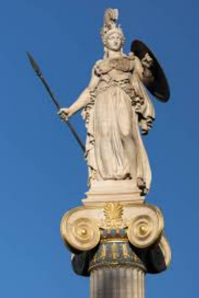
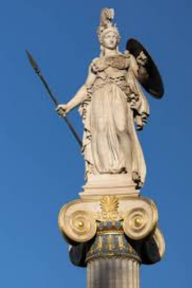

Atena edo Atenea (antzinako grezieraz: Ἀθηνά Athēná edo Ἀθήνη Athḗnē, dorieraz Ἀσάνα Asána) jakinduriaren, estrategiaren, bidezko gerraren eta artisautzaren jainkosa zen greziar mitologian. Jainkosa honen erreferentzia erromatarra Minerva izan zen. Zeus eta Metisen alaba zen: Zeus jainkoetan boteretsuena zen eta Metis, berriz, zuhurtziaren jainkosa.
Atenas hiriak jainkosaren omenez du izen hori eta bertan kokatzen da haren tenplurik ezagunena: Partenoia.
Jaiotakoan, Atenaren ezagutzak jakin nahian, jainko batzuek zenbait dema egin zizkioten, eta Atena beste jainkoak baino argiagoa zela agerian gelditu zen, baita gerraren arloan Ares (gerraren jainkoa) bera baina hobea ere. Beraz, Atena bidezko gerraren, estrategiaren eta jakinduriaren jainkosa izendatu zuten. Esaten da berak sortu zituela zientziak, artea eta nekazaritza, bereziki olibondoa eta oliba olioa.
 
